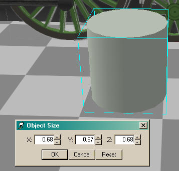

A Steam Loco for MSTS Using 3DCanvas
by Paul "decapod" Gausden
Chapter 4 - Pistons and Rods
Time to build the valve gear - animation may have to wait till next time.
Lesson Highlights - makes heavy use of group hierarchy for accurate positioning and animation. Copy and pasting of objects.
Cylinders
- drag a cylinder primitive onto the scene.
- Right click and Scale/To Size to the appropriate dimensions taken from the plan:

- The cylinder is not a huge object so there is no need to use 16 sides - right click, select "Open Source" and change the longitude to 12 - (this saves us 16 polys per cylinder):
- Looking at the plans, I see we need to angle the cylinders slightly - if you measure from the centre of the centre wheel to the point where the piston rod enters the cylinder you can calculate the angle - I make it about 2.9 degrees?
- Next, measure the same point on the cylinder, to the pivot point you marked on the plan at rail height (the centre line) - Z=4.68m, Y= 1.23m.
- There appears to be markings for the cylinders on the front elevation of the plan, this gives us X = 2.07m between the cylinders.
- We need to rotate the cylinder 90-2.9 = 87.1 degrees in the x-axis - Right click the cylinder and select properties - enter 87.1 in the X field of the group orientation.
- The pivot point of our cylinder object needs to be the same as our measuring point on the plan. The point is currently at the centre of the object but needs to be in the middle of the rear face. To Achieve this select the rear face with the face selection tool. Next run the "Shift Centre on Selection" plugin (or script for Pro version). This will give us the correct pivot position.

- Now drag the group containing the cylinder onto the Main group, bring up the object properties and enter X=1.035 (half of 2.07), y=1.23 and z=4.68 in the group position. The cylinder should now appear exactly as it does in the plan.
- The wheel connection rod as built by MSTS Engineer looks a bit on the thin side, so I have made it thicker (0.1m) in the X direction (right click/scale/to size)
- The wheel connection now needs moving out slightly from the wheels - click on the blue Z on the top menu to stop the object moving length ways and drag the rod with the mouse, so that it is just outside of the wheels again.
- I also enlarged the wheel bearing objects - select each object, press the Ctrl key and drag over the edit control - watching the scale size on the status bar) - Alternatively you can use the scale selection operation button. Right click on it first to set the scale sizes (I used "Scale" and 1.5 for all 3 values). Next select each bearing in turn and left click on the scale selection button.
Note: on models with no outside cylinders, you will now have to run my "fix animation position" plugin. This corrects the animation that was created by the MSTS Engineer - otherwise your connection will move in and out as well as around the wheel. For outside cylinder models we have to completely rebuild the animations so this is not needed.
On to the rods and piston objects... we will start with the right side...
- drag a cube primitive onto the scene. On the plan, measure the distance between the driving wheel rod connection point and the point where it connects to the rod coming out of the piston.
- The rear end of the rod needs to be made slightly taller so select the rear face and drag the mouse over the vertical part of the edit control till the Y dimension reads about 0.150:
- The animation of this rod is directly linked to the wheel and its pivot point is at one end. We first use the shift centre plugin to set the pivot point. Next drag the group containing the object onto the Wheels2 group (the one to which it is connected on the plan) and change the group name to something meaningful by clicking on the word "Group" in the hierarchy
panel - e.g. PistRodRight - Set the position of the object via the properties - The Z value must be 0.00 and Y -0.35 (half the stroke), the X value should be about 0.3 - use the same method we used earlier with the wheel connection to make fine tune adjustments to the X value by draging the object in or out. In fact the position can be calculated exactly from the cylinder centre and wheel group X positions of 1.035 & 0.7175 - i.e. 0.3175)
- We now need to add the piston object - Starting with the guide. For this I start with a cube and scale it to about 0.1, 0.2, 0.2
- This object is animated in a linear fashion, so it needs to be in its own group and not a child of the wheel. Firstly make it a child group of the main group by dragging it in the hierarchy. Next rename the group to something meaningful e.g. PistonRight:
- The animator plugin alters the Y & Z coordinates of this object so only the X coordinate is important here and that should be the same as the cylinder centre (1.035)
- Lastly (for this main part of the motion) add the piston itself. I have used a 6 sided cylinder, scaled to about 0.1 round and 1.6m long, rotated (X) 90 degrees and shifted so one end is the pivot point. Then remove both end faces.
- Now drag the new cylinder group onto the PistonRight group and set all the XYZ properties of the group to 0.00. Then drag the Cylinder object into the PistonRight group to fix its position. (Note: the piston rod now looks creased - use the Crease operation to smooth this object again. 3D Canvas, by default, creases angles of 120 degrees or less - this changes with version 6.0):
- Bring up the properties panel for the piston object and enter -2.9 in the group rotation properties.
A bit of maths needed here: the length is the Square root of (352*352) + (53*53) = 356 pixels *0.9638 = 343cm
Now scale the cube to a long rod 3.43m (Z) by 0.1 (X) by 0.1 (Y)
Detailing
I'm not going to go overboard on the detailing, it's not really necessary for a good model, most can be done with texturing.
Before animating it all, it is probably a good idea to build one side completely first, then all we need to do is copy and paste for the other side. I'm going to "cheat" at this point and just show a few pictures of the "detailed" cylinder, piston and rod with a small description of each:
Cylinder
I just added an 8 sided cylinder through the centre of the main cylinder.
Tip: where objects are symmetrical and the centre is hidden - use one object that passes through, it saves polys - e.g. steps on boilers etc.
Another smaller cylinder was added on the end of this and finally two small vertical cylinders (7 sided cylinders remain "smooth" when grouped) with a smoothed 3 sided cylinder was added below.
The top guide appears to be connected to the frames and not the cylinder - I'll just leave this floating free as you are unlikely to see the connection that close to the footplate (can be added later), however it will still be part of the cylinder object.
The slight taper on the end of the guide was created by scaling a cube 0.1, 0.05, 1.6 ), selecting the end face and extruding by 0.2m (no bevel). The select the lower edge and use the right mouse button to drag the edge up slightly (as shown)
Care was taken to remove *any* completely hidden faces, and faces that point downward below a metre above the rails. However, I have not yet removed the hidden faces near the frames on the inside, as I intend to use a copy of this cylinder object on the other side.
All of this was done with grouping, positioning and scaling. Finally all added objects were merged with the main cylinder object.
Once the Cylinder is complete:
- To add the cylinder on the other side, select the first cylinder, Copy (CTRL-C), select the cylinder again and Paste (CTRL-V) - this creates a new cylinder object as a child group of the first cylinder.
- In the properties of the new group, change Y and Z to 0.00 and X to -2.07. Since we know this is the right position, the new cylinder object can now be dragged into the first cylinder group.
A small comment on groups here: While modelling, having lots of groups is a good idea. Being able to move sets of object relative to other groups is useful and is essential for animated parts.
In MSTS, large numbers of groups (effectively the matrix lines in the S file) has an adverse effect on model performance, although there is reportedly a limit to the number of polys in a group.
In 3DC, usually as I'm modelling, I try and group objects together when I can - usually keeping them as separate objects which aids texturing later. 3D Canvas also makes use of groups for the unoptimised distance levels - anything not in the main group is removed over 700m - so the best idea is to keep small bodywork details in their own group.
Piston
The piston guide was shaped by using the CTRL key to select the top and bottom faces of the small cube at the same time and using the extrude tool to extrude by 0.08m (no bevel). Then by constraining the X movement, drag on the edit control to extend the faces to the correct length.
A single square face (by deleting all but one face from a cube) was scaled and added as the link to the reverser gear then shaped with the edit control (bottom edge shrunk and moved out slightly).
All parts combined into one object and hidden faces removed as before.
Rod
A small cube, slightly wider than the rod, was added to the wheel end of the rod. The top and bottom edge on the right were selected with the CTRL key down and the edges were chamfered (Chamfer operation button).
Parts combined and hidden faces removed.
- Before animating, it may be a good idea to copy the rest of these objects onto the left side. Starting with the Rod, select the object, press the copy button. Select the centre wheel on the ***RIGHT*** and press the paste button. Right click on the new object and set its position to -1.7525, 0, 0.35 - it should now appear on the left centred on the left wheel bearing.
The reason for this is because of the way the Engineer plugin builds the wheels - the wheels on the right are the "master" wheels. The ones on the left side are child groups of the right wheels and are not animated.
- Lastly, copy the piston and paste it into the main group. Rename the group PistonLeft. You will need to use the Flip operation (along the X Axis?) on this object to make the reverser connection point outward.
- Now be merciless and delete every face on all objects that can't be seen from the outside.